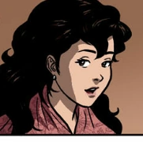
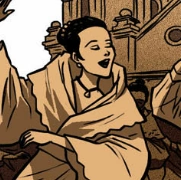
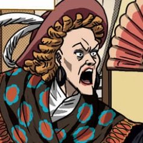
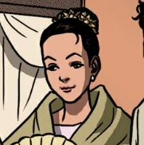

|
Crisostomo Ibarra | Galing sa Europa, ang binatang ito ay may pagka-kayumanggui at mapupula ang mga pisngi. Ang buong pangalan niya ay Juan Crisostomo Ibarra y Magsalin. | |||
|---|---|---|---|---|---|
|  | Maria Clara | Kapag kasama mo ang mga matatanda, sasabihin nila, "Dapat umasta ka katulad ni Maria Clara – mahinhin at konserbatibo.". Sino ba siya? Siya ang binibini na lihim na anak ng Fransiscano at Pia Alba. | |||
|
Padre Damaso | Si Padre Damaso ang Franciscanong kontrabida sa storya. Nauunahan siya ng galit kaysa kabaitan. | |||
|  | Donya Alba | Ang ginang na ito ay asawa ng kapitan. Siya ay pinagsayaw sa Obando ng Padre upang mabuntis. | |||
|
Kapitan Tiago | Siya ang gumawa ng magarbong pagdiriwang kung saan ay nagpakilala si Ibarra. Mapagkunwari ang kapitan. | |||
|  | Donya Victorina | Siya ay matalik na kaibigan ni Kapitan Tiago. | |||
|  | Paulita | Si Paulita Gomez ay pamangkin ni Donya Victorina. | |||
| References: | Crisostomo Ibarra. (n.d.). In Noli Me Tangere Wiki Fandom. https://noli-me-tangere.fandom.com/wiki/Ibarra | Donya Alba. (n.d.). In Noli Me Tangere Wiki Fandom. https://noli-me-tangere.fandom.com/wiki/Pia | Donya Victorina. (n.d.). In Noli Me Tangere Wiki Fandom. https://noli-me-tangere.fandom.com/wiki/Victorina | Kapitan Tiago. (n.d.). In Noli Me Tangere Wiki Fandom. https://noli-me-tangere.fandom.com/wiki/Tiago | Maria Clara. (n.d.). In Noli Me Tangere Wiki Fandom. https://noli-me-tangere.fandom.com/wiki/Maria_Clara | Padre Damaso. (n.d.). In Noli Me Tangere Wiki Fandom. https://noli-me-tangere.fandom.com/wiki/Damaso | Paulita. (n.d.). In Noli Me Tangere Wiki Fandom. https://noli-me-tangere.fandom.com/wiki/Paulita | |||||||||
|---|---|---|---|---|---|---|---|---|---|---|---|---|---|---|---|---|